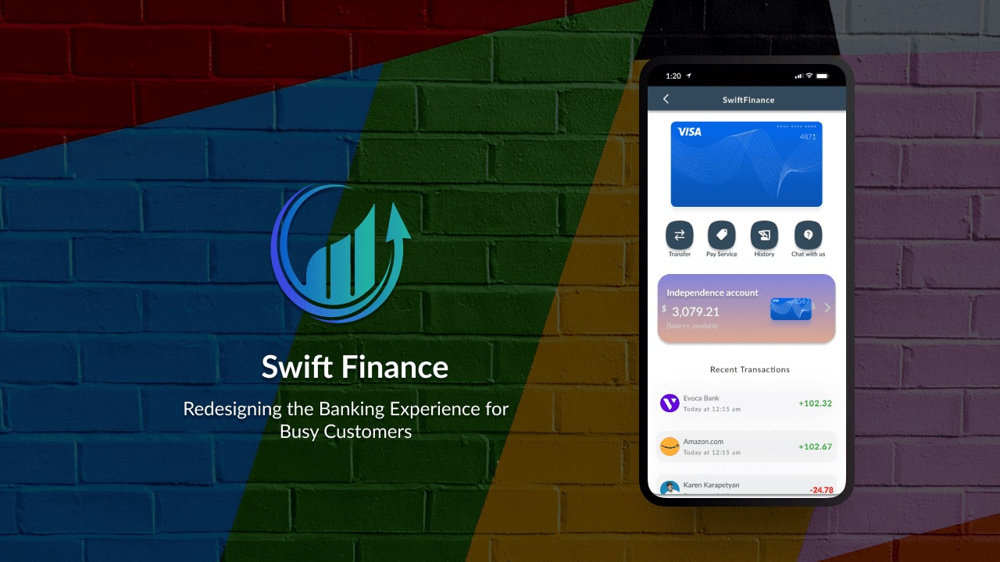

Banking apps are built for the bank, not the customer. I designed SwiftFinance, a mobile banking concept for busy professionals, around a single north star: make the three most common tasks achievable in under 15 seconds each. The result was a 61% jump in user satisfaction in testing and a design system built for speed without sacrificing depth.
Mobile banking had a paradox: the apps with the most features were the ones people liked using the least. Chase Mobile had a feature set that covered nearly every financial need, but the interface was cluttered, navigation required multiple taps to reach common actions, and the overall experience felt designed to demonstrate capability rather than serve the user's actual moment.
I saw a clear opportunity: nobody had nailed the intersection of simplicity, speed, and personalized insight in a single product. SwiftFinance was my attempt to do that.
"The most common banking task, checking your balance, took an average of 4–7 taps in leading apps. It should take zero."
I started with user interviews targeting busy professionals aged 24–40 who actively used mobile banking. I wasn't looking for a comprehensive survey of banking behavior, I wanted to understand the specific friction moments that made these apps feel like work.
Three consistent patterns emerged across interviews:
Competitive analysis of Chase Mobile, Bank of America, and Venmo validated the pattern: each app optimized for a different dimension (features, trust, social) but none combined all three into a daily-use experience that felt genuinely fast.
The 2.5-week constraint was real, this was a sprint, not an open-ended exploration. That constraint was clarifying. Every design decision had to earn its place. I couldn't design my way into complexity; I had to design my way out of it.
The north star that kept every decision honest: the 15-second balance check. If completing the most common banking task took longer than 15 seconds from app open to information, the design failed. I tested against this metric throughout the process, not just at the end.
The home screen leads with the total balance, large, clear, impossible to miss. No marketing banners. No push notifications for features the user didn't ask for. Last three transactions appear without scrolling. Quick-action buttons for Pay, Send, and Deposit are a single tap away above the fold.
The benchmark apps required 3–5 interactions to see this same information. SwiftFinance: zero additional taps from the home screen.
Research showed that sending money to a known contact was one of the highest-frequency actions, and it required an average of 6+ taps in competitor apps. The SwiftFinance payment flow: tap "Send" → select contact → confirm amount → done. Two taps and one confirmation.
Competitor apps buried spending analytics 3–4 navigation levels deep, so users stopped looking for them. In SwiftFinance, category-level spending data surfaces on the home screen as a module, visible without tapping, expandable for detail. Users in testing immediately noticed it and engaged with it.
Biometric login as the default removes the first friction point from every session. Security indicators are present but non-intrusive, visible enough to build trust, invisible enough not to create anxiety.
Post-design usability testing measured completion rates and task times against a baseline established using Chase Mobile and Bank of America as reference apps. SwiftFinance test participants completed all three core tasks (check balance, send payment, view spending insights) faster and with fewer errors than the same participants testing the reference apps.
Constraint is a design tool. Two and a half weeks forced ruthless prioritization, every decision had to justify itself against the north star metric. There was no room to design for hypothetical edge cases or future features that weren't scoped. The result was a tighter, more intentional product than I would have produced with an open-ended timeline.
The lesson I carry from SwiftFinance: simplicity isn't the absence of features. It's radical clarity about what the user needs in the specific moment they're in.
"If you design for the most common moment first, the rest of the experience gets easier to build around it."
Read the original published case study on Medium, including additional process detail, wireframes, and research findings.
Read on Medium